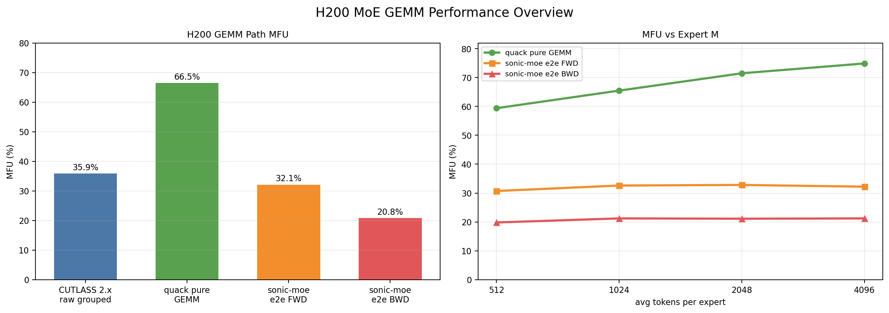
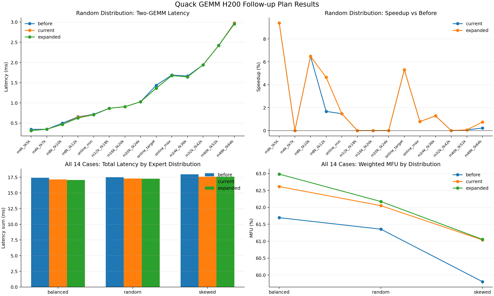

用可复核的数字描述贡献，也明确数字不能证明什么。
从问题到验证的工程闭环


口径纠偏、Profile 与本地回放
结论：性能差距的首要问题不是 H200 算力不足，而是 benchmark 与线上链路使用了不同的 routed-row 口径，并叠加 Triton autotune/warmup 污染。统一 DeepEP compact rows 后，三个代表 shape 的本地回放与线上差异收敛到 +0.46% / -1.11% / -5.40%。
1. 分析目标
面向 MoE grouped GEMM，工作分为三个问题：
- CUTLASS 2.x、Quack、DeepGEMM 和 SonicMoE e2e 的性能分别处于什么水平；
- pure GEMM 与 e2e 差距来自 kernel 本体、routing/communication 还是测试口径；
- 线上 shape 能否被本地稳定回放，并进一步做配置调优。
硬件口径为 H200 BF16，峰值按 989 TFLOPS 计算 MFU。MFU 只用于同一 FLOPs 定义下的比较。
2. 四路 benchmark
最初实验覆盖 18 个 shape，并比较四条路径，共 72 个逻辑数据点：
| 路径 | 测量范围 | 平均或代表结果 |
|---|---|---|
| CUTLASS 2.x grouped GEMM | raw grouped GEMM | 约 35.9% MFU |
| Quack / CUTLASS 3.x JIT | pure GEMM | 约 66.5% MFU |
| DeepGEMM | 预编译 shape 能命中时 | 依赖 bundle 覆盖 |
| SonicMoE forward | routing + gather + GEMM + combine | 约 32.1% MFU |
| SonicMoE backward | backward e2e | 约 20.8% MFU |
早期归档的 18 行结果中，Quack 平均 64.9%、CUTLASS 2.x 平均 35.2%、SonicMoE forward 平均 31.0%；后续扩展汇总得到 66.5%/35.9%/32.1%。两组数字来自不同汇总批次，简历使用后者，历史归档保留前者。
3. Profile 去噪
3.1 表象
第一次 profile 中，token_gather_sum 一度显示占总时间约 69.9%，看起来像 gather 是绝对瓶颈。但 trace 同时包含 Triton autotune、JIT 和 warmup，首轮运行不能代表稳态。
3.2 处理方法
- 把首次编译、autotune 和正式计时分开；
- 对同一 shape 先预热，再抓稳定迭代；
- 用 NVTX/range 将 routing、gather、GEMM、combine 分段；
- 对照单 kernel latency 与区间总时长，检查 trace 是否重复计入；
- 用理论 FLOPs 和实际 compact rows 重新计算 MFU。
3.3 稳态结论
| 区间 | 受污染表象 | 稳态口径 |
|---|---|---|
| token_gather_sum | 约 69.9% | 约 3.78% |
| Quack GEMM | 被 warmup 稀释 | 约 94.98% |
这一步把优化方向从“优先重写 gather”纠正为“先对齐 rows，再评估 GEMM schedule 和 e2e 通信/融合”。
4. Routed-row 口径纠偏
MoE 的 token 数至少有三种常见口径：
| 名称 | 含义 | 本次代表值 |
|---|---|---|
| T | 原始 token rows | 24,497 |
| T * top-k | 每个 token 对所有选中 expert 展开后的逻辑 rows | 195,976 |
| TK_valid | DeepEP dispatch 后实际 compact rows | 29,446 |
standalone benchmark 早期直接使用 T * top-k，而线上 kernel 接收的是按 expert compact 后的 TK_valid。195,976 / 29,446 约为 6.66，足以制造 4x-6x 的虚假性能差距。
统一原则：
- FLOPs 使用实际执行的 compact rows；
- expert-M 分布由 dispatch 后每个 expert 的有效行数决定；
- padding、capacity 和 dropped token 单独记录；
- pure GEMM 与包含 routing/communication 的 e2e latency 分开报告。
5. 线上 shape 回放
从线上 profile 中提取 1,024 条 forward range 的形状统计，按最小、目标、最大 compact rows 选择三个代表 case。公开仓库只保留聚合 shape，不保存内部原始 ranges。
| case | 本地相对线上差异 | 判断 |
|---|---|---|
| representative-min | +0.46% | 基本一致 |
| representative-target | -1.11% | 基本一致 |
| representative-max | -5.40% | 可接受，需考虑分布和系统噪声 |
差异收敛到约正负 5% 后，本地 benchmark 才适合作为 config tuning 的代理。此前基于全展开 rows 的 4x-6x 结论作废。
6. Pure GEMM 与 e2e 的差距
Quack pure GEMM 约 66.5% MFU，而 SonicMoE e2e forward/backward 约 32.1%/20.8%。差距可能来自：
- token dispatch、gather 和 combine；
- expert-M 不均衡与小矩阵尾部；
- 跨 rank 通信和同步；
- activation、scatter/add 与额外 HBM 流量；
- backward 中更多中间结果和依赖链。
因此，pure GEMM 已经较高效并不意味着 e2e 已经接近硬件峰值。优化优先级应由稳态 e2e trace 决定。
7. 工程产出
- 四路 benchmark 脚本与 JSON/Markdown 结果归档。
- H200 shape、expert distribution 和 MFU 统一口径。
- 线上 compact-row 回放方法。
- 调优前后 CSV、聚合脚本与组合图。
- SM90 tile/cluster/swizzle 调优指南。
8. 结论边界
- DeepGEMM 在早期四路表中部分 shape 未预编译，SKIP 不代表 kernel 性能为 0。
- +0.46% / -1.11% / -5.40% 是本地与线上 latency 差异，不是优化收益。
- 66.5% 是选定 shape 集上的平均值，不代表所有 H200 GEMM。
- 没有 NCU 证据的阶段不声称具体 stall 原因，只陈述时间线、shape 和理论分析。
9. 证据索引
14 shape × 3 分布配置调优
结论：不改 kernel 算法，只扩展 SM90 autotune 候选并按线上 compact-row 分布验证；目标 shape 约提升 5.3%，14 shapes x 3 expert distributions 聚合提升约 1.84%，weighted MFU 从 60.94% 提升到 62.06%。
1. 为什么做 config-level tuning
口径对齐后，Quack pure GEMM 已达到约 66.5% 平均 MFU。此时直接重写 kernel 成本高且证据不足，先验证 tile、cluster、persistent schedule 和 swizzle 的配置空间是否遗漏 H200/MoE 形状的更优点。
目标不是寻找单个“冠军 shape”，而是：
- 覆盖线上 min/target/max compact rows；
- 扩展到 14 个 routed-row shape；
- 用 random、balanced、skewed 三种 expert-M 分布检查稳健性；
- 分别评估 gated up projection 和 down projection；
- 保留失败配置与次优配置，避免只报告 best case。
2. 候选集
| 候选集 | 定义 | 用途 |
|---|---|---|
| before | Quack 当前内置 SM90 搜索空间 | baseline |
| current_after | 少量 H200/MoE 定向候选 | 验证低风险扩展 |
| expanded_after | 基于合法现有配置派生 cluster/swizzle 变体 | 扩大覆盖并避免 JIT 进程级失败 |
主要维度包括 tile M/N、cluster M/N、ping-pong、dynamic persistent 和 max swizzle size。候选生成会去重，并在执行前检查 SM90 gated/out 的合法性。
3. Benchmark 设计
固定条件：
- H=3072，I=1536，16 experts，top-k=8；
- H200 BF16 峰值按 989 TFLOPS；
- 每个 case 预热后多次计时，取重复组中位数；
- gated 与 out 分开计时，再计算加权总 latency/MFU；
- 随机种子固定，输出完整 CSV。
数据矩阵：
| 维度 | 数量 |
|---|---|
| compact-row shapes | 14 |
| expert-M distributions | 3 |
| operators | 2 |
| candidate sets | 3 |
4. 结果
| 口径 | before | after | 变化 |
|---|---|---|---|
| 目标线上 shape | baseline | tuned | 约 +5.3% |
| 14 shapes x 3 distributions 聚合 latency | baseline | tuned | 约 +1.84% |
| weighted MFU | 60.94% | 62.06% | +1.12 pp |
目标 shape 的提升高于全局平均，说明 schedule 对特定 compact rows 有价值；全局只有 1%-2% 则说明内置搜索空间已较成熟，新增候选不能在所有分布上稳定获益。
5. 开发流程
5.1 最小 target sweep
PYTHONPATH=[redacted-path]/sonic-moe:$PYTHONPATH \
python scripts/tune_quack_gemm_h200.py \
--cases online_target \
--candidate-set extended
5.2 before/after 扩展 shape 对照
PYTHONPATH=[redacted-path]/sonic-moe:$PYTHONPATH \
python scripts/compare_quack_gemm_before_after_h200.py
5.3 三分布完整计划
PYTHONPATH=[redacted-path]/sonic-moe:$PYTHONPATH \
python scripts/execute_quack_gemm_h200_plan.py \
--distributions random,balanced,skewed
脚本默认从本目录的 data/ 读写 CSV，不依赖整理者本机的绝对路径。执行 benchmark 仍需安装兼容的 PyTorch、CUDA、Quack/SonicMoE 环境和 H200 GPU。
6. 数据与脚本映射
| 产物 | 说明 |
|---|---|
| before/after CSV | 14 shape 的直接对照 |
| plan summary CSV | shape、分布、算子、候选集明细 |
| aggregate CSV | gated + out 聚合结果 |
| top configs CSV | 每组最佳配置 |
| tuning script | 最小候选 sweep |
| plan script | 14 shape x 3 分布完整执行 |
| summary script | Markdown 结果汇总 |
7. 失败与约束
- 某些 tile/cluster 组合不是抛 Python 异常，而是使 JIT 进程终止，因此 expanded 集合只从已知合法配置派生。
- expert-M 的总和相同不代表性能相同，skew 会改变 tail 和负载均衡。
- autotune 首轮包含 JIT 成本，必须预热后计时。
- 当前没有形成通用 dispatch policy，只证明候选配置在选定 workload 上有小幅收益。
- 这是 config tuning，不是 CUDA/CuTe kernel 重写；简历应使用“扩展候选并验证”，不使用“重构核心 kernel”。
66.5% 是 pure GEMM 的选定 shape 平均值，不能等同于 SonicMoE 端到端 MFU；1.84% 来自候选配置扩展，不是重写 CUDA/CuTe kernel。